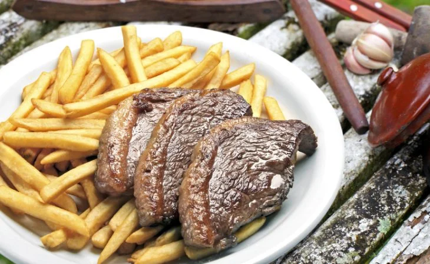

Picanha na Airfryer Simples
A picanha na airfryer vai te conquistar pela praticidade.
A textura macia e o sabor característico da carne são mantidos e é possível acrescentar temperos variados para agregar sabor.
Salsinha, manteiga e pimenta calabresa são alguns exemplos.
Ingredientes
- 3 bifes de picanha cortados na espessura de um dedo
- Sal grosso a gosto
Modo de Preparo
- Passe o sal grosso dos dois lados dos bifes;
- Coloque na airfryer na potência máxima por 3 minutos;
- Vire e deixe mais 3 minutos;
- A carne estará mal passada;
- Se desejar que a carne fique ao ponto, deixe por 5 minutos de cada lado.